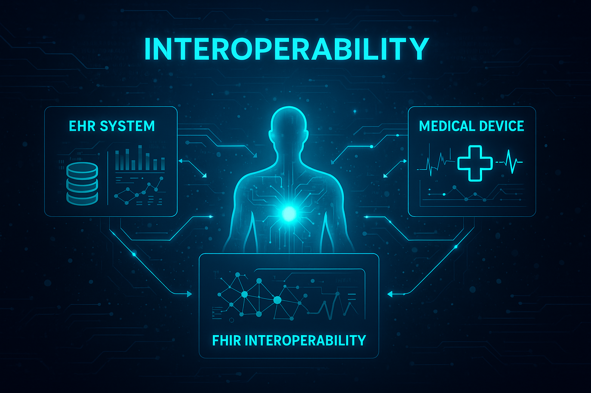
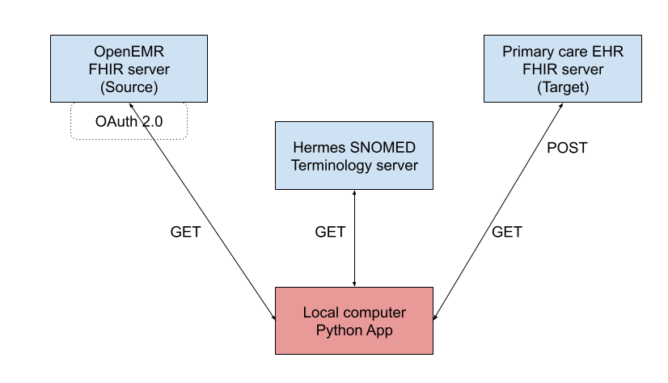

FHIR Powered Python ETL for Healthcare Interoperability
This project focuses on enhancing healthcare data interoperability using an ETL pipeline powered by Python and FHIR APIs.
Fast Healthcare Interoperability Resources (FHIR) is a modern, standards-based framework developed by HL7 for exchanging healthcare information electronically. FHIR APIs enable seamless, real-time access to clinical data across disparate systems by using RESTful architecture and widely adopted data formats like JSON and XML. Designed with scalability and interoperability in mind, FHIR supports both patient-centered applications and complex system integrations.
In the context of healthcare, FHIR APIs play a critical role in enhancing data interoperability, improving care coordination, and enabling patient access to health records. By standardizing the structure and exchange of data such as patient demographics, medications, lab results, and clinical encounters, FHIR facilitates more accurate, timely, and secure communication between healthcare providers, payers, and patients.